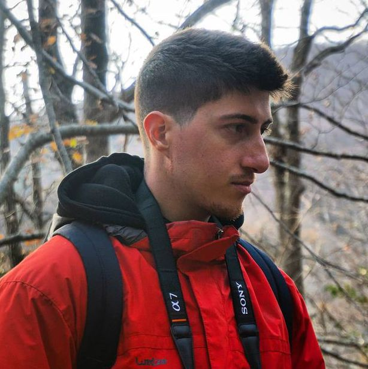

Mi nombre es Adrià Ros Ruiz, tengo 25 años y vivo en Premià de Mar.
Mi gran afición es el baloncesto. Lo llevo practicando desde que tengo 5 años, y estuve jugandolo a nivel federado hasta hace 4 años. A día de hoy sigo jugando a baloncesto pero en la calle, en las canchas con mis amigos y excompañeros de equipo. Los equipos en los que jugué fueron los siguientes:
Otra de mis aficiones son los videojuegos. Mi top 3 de videjouegos sería el siguiente:
A nivel formativo tengo dos estudios superiores, los cuales realicé después de acabar bachillerato: